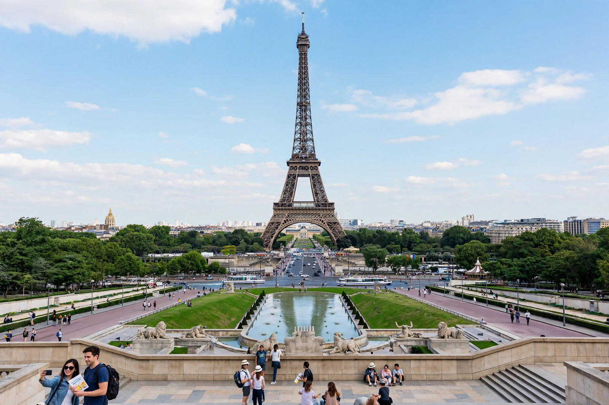

Paris
The capital of France, the City of Light
Paris is the capital and largest city of France, famous for the Eiffel Tower, its grand boulevards and museums, and its arrondissements spiralling out from the Seine. Wikivoyage's guide covers its districts, getting in by air (Charles de Gaulle and Orly), train and road, getting around by Métro, and its sights, food and nightlife in practical detail.

[Image: The Eiffel Tower seen from the Trocadéro across the Seine]
See
The Eiffel Tower, Notre-Dame Cathedral (under restoration after the 2019 fire), the Louvre, Musée d'Orsay, Sacré-Cœur and Montmartre, the Arc de Triomphe and the Champs-Élysées are the classic first-time sights.
Eat and sleep
Guides list cafés, bistros and bakeries by district, markets and budget chains, and accommodation from hostels to grand hotels, organised by arrondissement.